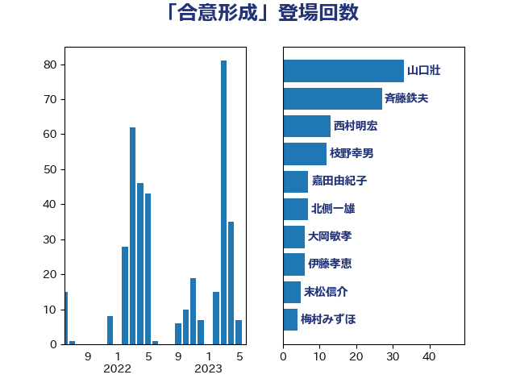

単語「合意形成」

| 山口壯 | 自由民主党 | 33 回 |
| 斉藤鉄夫 | 公明党 | 27 回 |
| 西村明宏 | 自由民主党 | 13 回 |
| 枝野幸男 | 立憲民主党 | 12 回 |
| 嘉田由紀子 | 無所属 | 7 回 |
| 北側一雄 | 公明党 | 7 回 |
| 大岡敏孝 | 自由民主党 | 6 回 |
| 伊藤孝恵 | 国民民主党 | 6 回 |
| 末松信介 | 自由民主党 | 5 回 |
| 梅村みずほ | 日本維新の会 | 4 回 |
| 末次精一 | 立憲民主党 | 4 回 |
| 小沼巧 | 立憲民主党 | 4 回 |
| 寺田静 | 無所属 | 4 回 |
| 大島敦 | 立憲民主党 | 4 回 |
| 階猛 | 立憲民主党 | 3 回 |
| 足立康史 | 日本維新の会 | 3 回 |
| 西村康稔 | 自由民主党 | 3 回 |
| 紙智子 | 日本共産党 | 3 回 |
| 神谷裕 | 立憲民主党 | 3 回 |
| 永岡桂子 | 自由民主党 | 3 回 |
| 横沢高徳 | 立憲民主党 | 3 回 |
| 東徹 | 日本維新の会 | 3 回 |
| 小野泰輔 | 日本維新の会 | 3 回 |
| 小山展弘 | 立憲民主党 | 3 回 |
| 宮崎政久 | 自由民主党 | 3 回 |
| 伴野豊 | 立憲民主党 | 3 回 |
| 井出庸生 | 自由民主党 | 3 回 |
| 中川正春 | 立憲民主党 | 3 回 |
| 中島克仁 | 立憲民主党 | 3 回 |
| 高良鉄美 | 無所属 | 2 回 |
| 高橋光男 | 公明党 | 2 回 |
| 青山大人 | 立憲民主党 | 2 回 |
| 鈴木義弘 | 国民民主党 | 2 回 |
| 野村哲郎 | 自由民主党 | 2 回 |
| 石井正弘 | 自由民主党 | 2 回 |
| 田名部匡代 | 立憲民主党 | 2 回 |
| 渡辺創 | 立憲民主党 | 2 回 |
| 梅谷守 | 立憲民主党 | 2 回 |
| 有村治子 | 自由民主党 | 2 回 |
| 庄子賢一 | 公明党 | 2 回 |
| 川合孝典 | 国民民主党 | 2 回 |
| 岸田文雄 | 自由民主党 | 2 回 |
| 山崎正恭 | 公明党 | 2 回 |
| 宮下一郎 | 自由民主党 | 2 回 |
| 室井邦彦 | 日本維新の会 | 2 回 |
| 大石あきこ | れいわ新選組 | 2 回 |
| 加藤鮎子 | 自由民主党 | 2 回 |
| 伊藤孝江 | 公明党 | 2 回 |
| 中曽根康隆 | 自由民主党 | 2 回 |
| 高橋千鶴子 | 日本共産党 | 1 回 |
| 野中厚 | 自由民主党 | 1 回 |
| 進藤金日子 | 自由民主党 | 1 回 |
| 赤羽一嘉 | 公明党 | 1 回 |
| 舩後靖彦 | れいわ新選組 | 1 回 |
| 舟山康江 | 国民民主党 | 1 回 |
| 緑川貴士 | 立憲民主党 | 1 回 |
| 竹内譲 | 公明党 | 1 回 |
| 稲田朋美 | 自由民主党 | 1 回 |
| 福島伸享 | 無所属 | 1 回 |
| 神津たけし | 立憲民主党 | 1 回 |
| 石川大我 | 立憲民主党 | 1 回 |
| 石垣のりこ | 立憲民主党 | 1 回 |
| 石井苗子 | 日本維新の会 | 1 回 |
| 矢倉克夫 | 公明党 | 1 回 |
| 盛山正仁 | 自由民主党 | 1 回 |
| 田嶋要 | 立憲民主党 | 1 回 |
| 田中健 | 国民民主党 | 1 回 |
| 玉木雄一郎 | 国民民主党 | 1 回 |
| 猪口邦子 | 自由民主党 | 1 回 |
| 牧義夫 | 立憲民主党 | 1 回 |
| 清水貴之 | 日本維新の会 | 1 回 |
| 浜口誠 | 国民民主党 | 1 回 |
| 浅野哲 | 国民民主党 | 1 回 |
| 河西宏一 | 公明党 | 1 回 |
| 武部新 | 自由民主党 | 1 回 |
| 森屋隆 | 立憲民主党 | 1 回 |
| 梶山弘志 | 自由民主党 | 1 回 |
| 柴田巧 | 日本維新の会 | 1 回 |
| 松沢成文 | 日本維新の会 | 1 回 |
| 木村次郎 | 自由民主党 | 1 回 |
| 早稲田ゆき | 立憲民主党 | 1 回 |
| 新藤義孝 | 自由民主党 | 1 回 |
| 新妻秀規 | 公明党 | 1 回 |
| 斎藤アレックス | 国民民主党 | 1 回 |
| 打越さく良 | 立憲民主党 | 1 回 |
| 後藤茂之 | 自由民主党 | 1 回 |
| 平山佐知子 | 無所属 | 1 回 |
| 岸真紀子 | 立憲民主党 | 1 回 |
| 岡本三成 | 公明党 | 1 回 |
| 山田勝彦 | 立憲民主党 | 1 回 |
| 山下芳生 | 日本共産党 | 1 回 |
| 宮本岳志 | 日本共産党 | 1 回 |
| 宮崎雅夫 | 自由民主党 | 1 回 |
| 坂本祐之輔 | 立憲民主党 | 1 回 |
| 國重徹 | 公明党 | 1 回 |
| 國場幸之助 | 自由民主党 | 1 回 |
| 吉川元 | 立憲民主党 | 1 回 |
| 古川禎久 | 自由民主党 | 1 回 |
| 勝部賢志 | 立憲民主党 | 1 回 |
| 加藤勝信 | 自由民主党 | 1 回 |
| 佐藤英道 | 公明党 | 1 回 |
| 丹羽秀樹 | 自由民主党 | 1 回 |
| 中谷元 | 自由民主党 | 1 回 |
| 中田宏 | 自由民主党 | 1 回 |
| 中村裕之 | 自由民主党 | 1 回 |
| 中川貴元 | 自由民主党 | 1 回 |
| 三木圭恵 | 日本維新の会 | 1 回 |
| たがや亮 | れいわ新選組 | 1 回 |